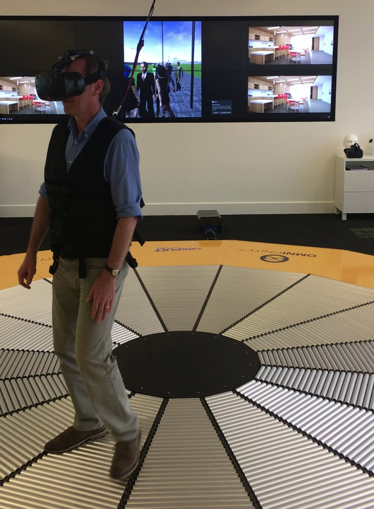
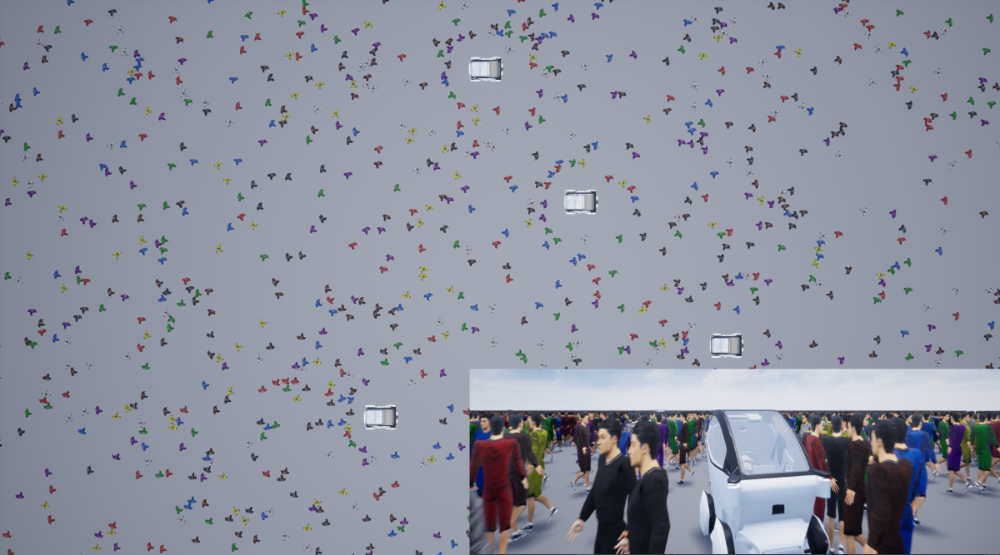

Other Work
Crowd simulation in Milton Keynes train station area (August 2017)
The work was done as part of a placement at Transport Catapult Systems in Milton Keynes
Simulation implemented in Unreal Engine 4
Agent-based simulation running in a VR environment
Autonomous vehicles added to the simulation
VR treadmill integration to interact with the crowd
HTC VIVE VR headset used

Other paper publications (2019-2020)
Created visualisation of crowd simulations in Unreal Engine 4
Simulations use the ORCA model running on the GPU to model the agents
Autonomous vehicles are incorporated to the simulation
